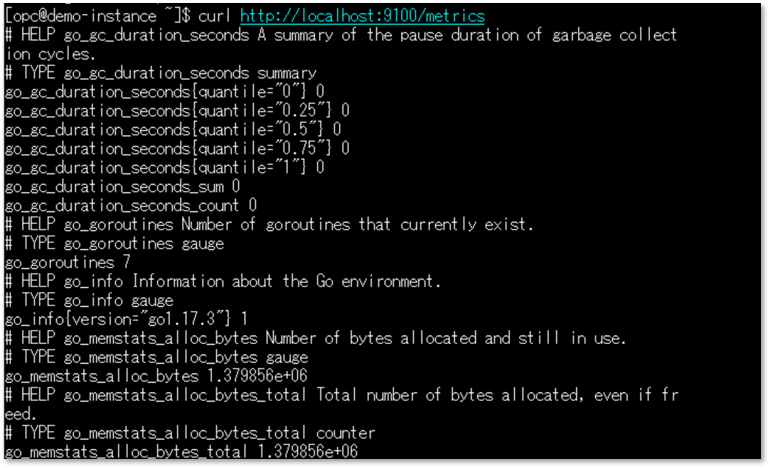

チュートリアル概要説明
このチュートリアルでは、Node Exporterが収集したOCIインスタンスのメトリックをモニタリングで可視化するまでのステップをご紹介します。
本チュートリアルはこちらのドキュメントを補足する内容となりますので、あわせてご参照ください。
所要時間 : 約30分
前提条件 :
- 監視対象となるコンピュート・インスタンスの作成
参考：その3 - インスタンスを作成する - OSはOracle Linux 7.9
- 管理エージェントはOracle Cloud Agentプラグインを使用
- 構成のイメージ

必要な権限 : 以下の権限設定が最低限必要となります。
- 動的グループ
all {resource.type = 'managementagent', resource.compartment.id ='<your compartment id>'}動的グループの概要と設定方法については以下を参照ください。
参考：OCI活用資料集：IDおよびアクセス管理 (IAM) 詳細 - ポリシー
allow service loganalytics to read loganalytics-features-family in tenancy allow dynamic-group <your dynamic-group-name> to use metrics in tenancy / compartment <your compartment name>
チュートリアル内の画面ショットについては現在のコンソール画面と異なっている場合があります。
1. Oracle Cloud Agent プラグインの有効化
- コンピュートインスタンスの詳細画面で管理エージェントのプラグインを有効にします。

2. 管理エージェント ステータスの確認
-
監視および管理 > 管理エージェント > エージェント

-
有効化が完了していればアクティブとして表示されます。

3. Node Exporter ダウンロード
- コンピュート・インスタンスにSSHでログインし、OPCユーザーで以下コマンドを実行します。※2022年9月時点でNode Exporterの最新版はv1.3.1
wget https://github.com/prometheus/node_exporter/releases/download/v1.3.1/node_exporter-1.3.1.linux-amd64.tar.gz - または、Githubから直接ダウンロードし、SCPツール等で監視対象サーバーにコピーします。

4. Node Exporter インストールの確認
- 解凍した後、インストール確認のためNode_Exporterを実行します。
tar xvfz node_exporter-1.3.1.linux-amd64.tar.gzcd node_exporter-1.3.1.linux-amd64./node_exporter - 実行するとNode Exporterが起動し、以下のようなメッセージが出力されますのでそのままにしておきます。※停止するにはCtl+C

- Node Exporterを起動したまま、別のターミナル画面を開いて以下コマンドを実行します。
curl http://localhost:9100/metrics - 以下のように収集されたメトリック一覧が表示されれば、インストールは成功です。

5. SElinux モード変更
- Node Exporterが自動起動するようにサービス化するため、SELinuxのモードを変更しておきます。
sudo vi /etc/selinux/config -
コンフィグファイルで enforcing > permissive へ変更し、OSを再起動します。

- getenforceコマンドでモードがpermissiveに変更されていることを確認します。
6. Node Exporter サービス化
- Systemdのユニット定義ファイルを作成します
sudo vi /etc/systemd/system/node_exporter.service - 記述例
[Unit] Description=Node Exporter [Service] User=opc ExecStart=/home/opc/node_exporter-1.3.1.linux-amd64/node_exporter [Install] WantedBy=multi-user.target - ユニット定義ファイルのリロード
sudo systemctl daemon-reload - OS再起動時にサービスが自動起動するよう有効化
sudo systemctl enable node_exporter - サービスの起動
sudo systemctl start node_exporter - 以下コマンドでステータスを確認し、ActiveになっていればOKです。
sudo systemctl status node_exporter
7. 管理エージェント 構成ファイルの作成
- 管理エージェントの検出ディレクトリに構成ファイルを配置します。拡張子は必ず .properties とします。
sudo vi /var/lib/oracle-cloud-agent/plugins/oci-managementagent/polaris/agent_inst/discovery/PrometheusEmitter/<任意の名前>.properties - 管理エージェントを個別インストールするケース、例えばオンプレミスのサーバーに個別でインストールする場合などは、PrometheusEmitterがあるディレクトリは以下のようになります。
/opt/oracle/mgmt_agent/agent_inst/discovery/PrometheusEmitter/ -
管理エージェントの個別インストールの詳細についてはドキュメントを参照ください。
- 以下は必須項目になります。
url= http://<インスタンスのプライベートIP>:9100/metrics namespace= 任意のネームスペース名 ※アルファベット小文字とアンダースコアのみ、”oci_”はモニタリングで予約済のため使用不可 compartmentId= コンパートメントのOCID - 以下はオプションになります。
nodeName= インスタンスのホスト名 metricDimensions= 任意のディメンション名 allowMetrics= 必要なメトリックをカンマ区切りで記載することで、メトリックをフィルタリング可能 -
構成ファイルのパラメータ詳細についてはドキュメントを参照ください。
- 記述例
url=http://10.0.0.237:9100/metrics namespace=demo_prometheus nodeName=demo-instance metricDimensions=nodeName allowMetrics=node_cpu_seconds_total,node_memory_Active_bytes,node_filesystem_avail_bytes compartmentId=ocid1.compartment.oc1..aaaaaaaa3ypj2e4upj5hebkivdksna2nkelu3pjmimyemkgvwexarpppvyrq - この例では以下のメトリックのアップロードを許可しています。
- node_cpu_seconds_total（CPU時間）
- node_memory_Active_bytes（メモリ使用量）
- node_filesystem_avail_bytes（ファイルシステム使用量）
8. モニタリングでメトリックを確認
-
構成ファイルを配置すると、1分程度でメトリックが反映されます。

-
ネームスペースやメトリック名で構成ファイルで定義したメトリックを選択できるようになっています。


参考：メトリックのフィルタリングについて
- Node Exporterでは多くのメトリックがデフォルトで有効になっており、大量のデータがOCIに送信されます。カスタムメトリックのInjectionは課金対象となるため、「allowMetrics」で必要なメトリックのみ許可する設定をお勧めします。メトリックの種類については公開された情報がないようですので、Node Exporterを起動して確認してください。※参照：4. Node Exporter インストールの確認

参考：コレクタによるフィルタリング
-
Node Exporterにはコレクタという概念があり、メトリックの種類ごとにカテゴリ分けがされています。Node Exporter起動時にコレクタを有効化・無効化することができますので、こちらを使ってメトリックをフィルタリングすることも可能です。
- ユニット定義ファイルの記述例
[Unit] Description=Node Exporter [Service] User=opc ExecStart=/home/opc/node_exporter-1.3.1.linux-amd64/node_exporter --collector.disable-defaults --collector.cpu --collector.meminfo --collector.filesystem [Install] WantedBy=multi-user.target - コレクタの種類と有効化・無効化の設定詳細についてはNode Exporterのドキュメントを参照ください。
参考：管理エージェントのログファイルの配置場所
- Oracle Cloud Agent プラグインを使用している場合
/var/lib/oracle-cloud-agent/plugins/oci-managementagent/polaris/agent_inst/log/ - 管理エージェントを個別にインストールした場合
/opt/oracle/mgmt_agent/agent_inst/log/ - 主に以下のログファイルがインストールのトラブルシューティングに役立ちます。
mgmt_agent.log mgmt_agent_client.log